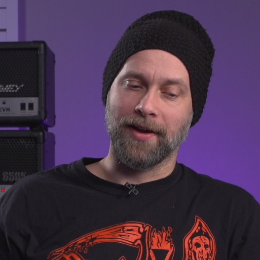

Chapter 8: Drum Production
The foundation of impact in heavy production.
Navigate Chapters
Unsurprisingly, drum production was found to be perhaps the most time-consuming and important element in creating heaviness: the foundation upon which everything else rests. Across all eight producers, careful attention was paid to drum processing, though approaches varied considerably in implementation. From minimalist enhancement to complete reimagining, each philosophy yielded distinct yet equally effective results.
Sample Implementation
All producers except Andrew Scheps added samples to enhance and sculpt their drum sounds, though with remarkably varied methodologies. Interestingly, the number of samples used did not align neatly with the producers' philosophical positions; Bogren, who occupies the middle ground, used four kick samples, while hyperreal adherent Odeholm relied on just one strategically implemented sample. This disconnect suggests that the definition of a production philosophy rests on how samples are integrated within the larger production framework, not on sample usage itself.
The research demonstrated clear distinctions in approach: some producers like Bogren employed samples as complementary layers that enhanced specific characteristics of the original recordings, while others such as Middleton used samples as complete replacements, crafting an entirely new drum sound that aligned with their sonic vision. Between these extremes, producers like Nordström and Exeter used selective reinforcement by adding samples only where the original recordings needed enhancement.
This diversity of sampling techniques within both naturalistic and hyperreal camps demonstrates that the boundary between these philosophies manifests in how producers integrate them: whether preserving the performance's original character or engineering a new sonic identity that transcends the acoustic recording.
Table 8.1: Overview of drum sample use per producer
| Producer | Kick | Snare | Toms |
|---|---|---|---|
| Bogren | ●●●● | ●●●● | — |
| Exeter | ●●●●● | ● | — |
| Getgood | ●●●● | ● | — |
| Middleton | ● | ● | ● |
| Nordström | ● | ● | ● |
| Odeholm | ● | ● | ● |
| Otero | ●●●●●● | ●●●●● | — |
| Scheps | — | — | — |
Note: Some producers, especially Middleton, have pre-mixed and bounced samples so that their number is understated.
Kick Drum: The Cornerstone of Heaviness
Apart from Andrew Scheps, every producer in the study employed some form of sample reinforcement on the kick drum, but with significantly different methodologies and intent:
- Layered Approach: Jens Bogren employed one of the most complex techniques, using four distinct kick samples layered with the original recording. Each sample served a specific purpose: one for consistency across hits, another for attack definition, a third for "wet" character, and a fourth for what he termed 'obnoxious click' to cut through dense guitar sections. Despite this complexity, Bogren emphasized that these samples complemented rather than replaced the original recording in order to preserve its natural quality while enhancing specific characteristics.
- Frequency-Split Method: Buster Odeholm applied a frequency-splitting technique1, using a consistent one-shot sample for sub-bass frequencies and basic tone while retaining the original kick for high-frequency detail and variation. 'The human ear can't detect if low frequencies are "robotic"; we just feel them', he explained, justifying the perfect consistency in the low-end range. This hybrid approach ensures both consistent low-end impact and natural performance variation in the attack portion.
- Contextual Reinforcement: Mike Exeter took a section-dependent approach by automating the blend between samples and the original kick throughout the song. In dense verses with fast double-kicks, he increased sample presence for definition; in sparse breakdowns, he allowed more of the natural kick to dominate. This context-specific methodology optimized the kick's presence throughout varying arrangements while maintaining a consistent overall character.
Our research demonstrated that kick drum heaviness derives from two essential qualities:
- Sub-bass impact2: The physical sensation of air movement, typically centred around 55-125 Hz.
- Attack definition3 and punch: The transient clarity that cuts through dense mixes, concentrated in the 3-5 kHz region.
Each producer balanced these elements differently, but all ensured the kick maintained presence across the frequency spectrum while interacting appropriately with the bass guitar and palm-muted guitars.
Snare Drum: The Aggressive Edge
The snare treatment showed another spectrum of approaches, with producers balancing natural character against consistency and cut:
- Bogren's 'Snare Smorgasbord': Jens Bogren applied the same layered philosophy to snare as he did to kick drums, with each sample serving a specific function: a 'natural and ringy' layer for fills, a 'beefy crack' sample for weight, a consistency layer for backbeats, and a transient 'spike' sample for definition in dense sections.
- Natural Enhancement: In contrast, Mike Exeter and Andrew Scheps prioritized the original snare character and thus used minimal or no sample reinforcement. They instead applied strategic EQ and compression, along with automation, to maintain presence throughout the mix.
- Complete Replacement: At the opposite extreme, Josh Middleton opted to replace the original snare entirely to achieve specific tonal qualities that complemented his guitar sound. This approach allowed for precise control over attack, sustain, and tone, which ensured consistency across various dynamic sections.
The research identified specific challenges in managing snare sonics in extreme metal:
- Disappearing under guitars: Every producer mentioned the phenomenon where a snare that sounds perfect in isolation becomes nearly inaudible once guitars enter the mix.
- Consistency across tempos: Fast sections require different snare characteristics than slow sections.
- Balance between attack and body: Too much attack creates a thin, clicking sound; too much body results in a muddy, unfocused impact.
The solutions ranged from frequency-specific compression to enhance attack, strategic automation across song sections, and careful layering of samples to complement rather than replace the original recording.
Toms and Cymbals: Detail and Dimension
While kick and snare received the most attention, tom and cymbal treatment offered insights about how producers approached the overall drum presentation:
- Tom Replacement vs. Reinforcement: Three distinct approaches were observed for tom treatment. Middleton and Exeter chose complete replacement, using programmed MIDI and samples to achieve consistent tone and impact. Nordström took a reinforcement approach by adding samples beneath the original performances to enhance detail without sacrificing character. The remaining producers employed varying degrees of augmentation while retaining the original recordings as the primary source.
- Cymbal Space and Control: Cymbals were generally not sample-reinforced or replaced, but producers differed in spatial treatment. Scheps positioned cymbals in a wide stereo field with natural decay. In contrast, Odeholm tightly controlled cymbal resonance through gating4 and aggressive EQ to prevent wash from obscuring other elements. These opposing approaches reflect broader philosophical differences: naturalistic production values space and dimension, while hyperreal approaches prioritize control and impact.
Dynamic Processing Strategies
Beyond sample reinforcement, the research documented sophisticated dynamic processing techniques that impacted perceived heaviness:
- Transient Design: Several producers applied transient designers to customize the attack and sustain characteristics of drum elements independently. Middleton described using transient designers on toms to increase sustain while controlling the initial attack, which allowed them to resonate more fully in sparse sections. Getgood took this approach further by automating transient designer settings throughout different parts of the song, decreasing attack on isolated hits while increasing it during fast fills for a clearer sound.
- Contextual Automation: Some producers frequently used automation as a valuable tool, though applied to varying extents. Most producers automated at least some drum elements to address specific arrangement challenges. Exeter's approach was particularly noteworthy: he made fine-grained adjustments to drum processing during different song sections to ensure optimal presence regardless of arrangement density. As he explained, 'These separate decisions make no sense in solo', referring to how drastically different processing might be applied to identical drum hits depending on their musical context.
- Parallel Processing: Many producers employed parallel compression5 on drums by blending heavily compressed versions with the original signals to maintain both impact and natural dynamics. Scheps relied heavily on parallel processing rather than multiband compression, believing it preserved more of the drums' natural phase relationships while still providing the necessary control.
Spatial Treatment and Cohesion
The final dimension of drum production involved creating appropriate spatial characteristics to support the overall mix approach:
- Room Sound Implementation: Approaches to drum ambience fell along the natural-hyperreal spectrum. Scheps and Bogren employed room mics and reverb6 to create a three-dimensional drum sound with natural depth. Odeholm and Getgood favoured extremely controlled, minimal ambience with precisely tailored reverb processors only on specific elements. Between these extremes, Middleton and Otero used short, tight room simulations to add dimension without sacrificing impact.
- Kit Cohesion: Regardless of sample usage, all producers emphasized the importance of the drum kit functioning as a unified instrument. Bogren used up to four different reverbs on drums, each tailored to specific elements but sharing some common space to create cohesion. Odeholm, despite heavy sample usage, ensured consistent transient characteristics across all drum elements to maintain the impression of a single performer.
Achieving heavy drums involves balancing seemingly contradictory goals: maintaining both clarity and power, preserving character while ensuring consistency, and creating space without sacrificing impact. The most successful approaches resolved these tensions through the careful application of technology in service of musical intent rather than technical perfection for its own sake.
'The kick has to be number one. And kick always has to be because that's what's driving the rhythm. And that's what's moving the track forward'.

'If you start to isolate things too much, it's not going to work. A killer drum sound solo may be obliterated once the guitars come in, so you have to mix with the guitars in from the start, sculpting each component in context'.

'Cymbal bleed is one of the things that anyone who has ever mixed a song with real drums is pulling their hair out trying to deal with'.
Endnotes
- Processing only certain frequencies of an instrument by removing frequencies above and below the desired range. ↩
- Low-frequency energy that creates physical sensation and perceived weight. ↩
- The sharpness and clarity of the initial attack transient. ↩
- Noise gate processing that removes quiet signal components below a threshold. ↩
- Blending heavily compressed versions with original signals. ↩
- The simulation of multiple sound reflections that create a sense of space. ↩